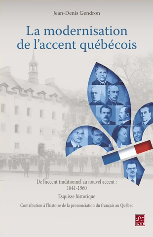
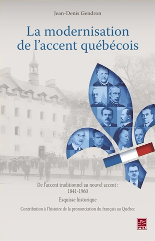

🏰 1. Les origines : Un français venu de France
Au XVIIᵉ siècle, la Nouvelle-France (ancien nom du Québec) devient une colonie française. Les colons viennent principalement de différentes régions de France : Normandie, Île-de-France, Bretagne, Poitou, apportant avec eux leurs accents et leurs expressions locales.
Mais à cette époque, il n’existe pas encore un français standard unique comme aujourd’hui. Le roi Louis XIV et sa cour parlent une version raffinée du français, mais dans les provinces, les gens utilisent des dialectes régionaux très variés. C’est donc un mélange de ces parlers qui s’installe en Nouvelle-France.
En plus, comme la colonie est éloignée de la France, le français québécois va évoluer différemment, en conservant des mots et des tournures disparus en métropole.
👉 À retenir : Le français québécois ne vient pas du français moderne de France, mais d’un français plus ancien du XVIIᵉ siècle !
⚔️ 2. La Conquête britannique (1760) : Un français isolé
En 1760, la Grande-Bretagne prend le contrôle de la Nouvelle-France après la Guerre de Sept Ans. Résultat ? Les contacts avec la France sont coupés et le français du Québec évolue de son côté, sans subir les changements qui vont transformer le français en France.
Pendant ce temps, en France, la Révolution française (1789) modifie profondément la langue. De nombreux mots issus de l’aristocratie disparaissent, et le français parisien devient la norme sous l’influence des académiciens et des révolutionnaires.
Au Québec, c’est l’inverse : la langue évolue dans un environnement plus rural et conservateur, gardant des mots oubliés en France, comme :
- *Char* (voiture) – utilisé en France avant de devenir « automobile » 🚗
- *Magasiner* (faire du shopping) – dérivé de « magasin », disparu en France 🏪
👉 Conséquence : Le français québécois a préservé un héritage linguistique unique, avec des expressions et une prononciation qui rappellent la France d’avant la Révolution !
🇬🇧 3. L’influence de l’anglais et des langues autochtones
À partir du XIXᵉ siècle, l’anglais devient la langue dominante au Canada. Même si les Québécois résistent, ils sont en contact quotidien avec des anglophones, ce qui entraîne des emprunts à l’anglais dans leur parler courant.
Exemples d’anglicismes québécois :
- *Checker* → « vérifier » (de *to check*)
- *Cooler* → « glacière » (de *cooler*)
- *Parking* → « stationnement »
Mais ce n’est pas tout ! Le français québécois a aussi emprunté des mots aux peuples autochtones, qui étaient là avant l’arrivée des colons.
Mots d’origine autochtone en français québécois :
- *Atoca* (canneberge) – issu de l’algonquin
- *Manitou* (esprit, figure spirituelle)
👉 À noter : Malgré ces influences, le français québécois reste une langue bien distincte et riche, avec des innovations propres et une grammaire bien conservée !
🗣 4. Une langue qui continue d’évoluer !
Le XXᵉ siècle marque une prise de conscience linguistique : les Québécois veulent protéger leur langue face à la montée de l’anglais. C’est ainsi qu’en 1977, la Loi 101 est adoptée. Cette loi impose l’usage du français dans :
- Les écoles
- Les entreprises
- L’administration publique
Grâce à ces efforts, le français québécois est vivant, dynamique et en constante évolution ! Aujourd’hui, les jeunes inventent de nouvelles expressions et les médias québécois contribuent à moderniser la langue.
💡 À retenir
- Le français québécois vient du français des colons du XVIIᵉ siècle.
- Il a évolué différemment à cause de l’isolement et de l’influence anglaise.
- Il a gardé des mots anciens et adopté des expressions uniques.
- C’est une langue riche, vivante et dynamique !

 
